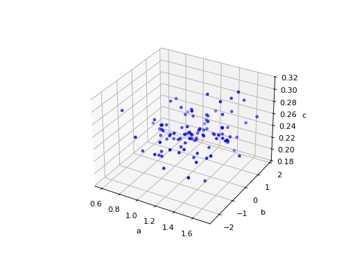
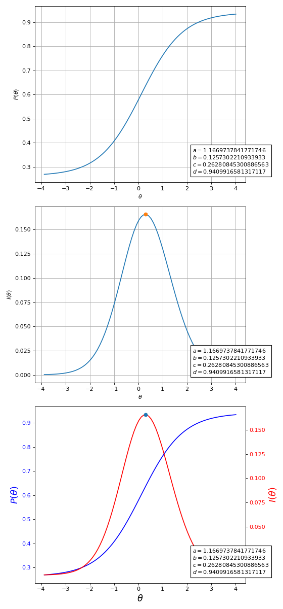
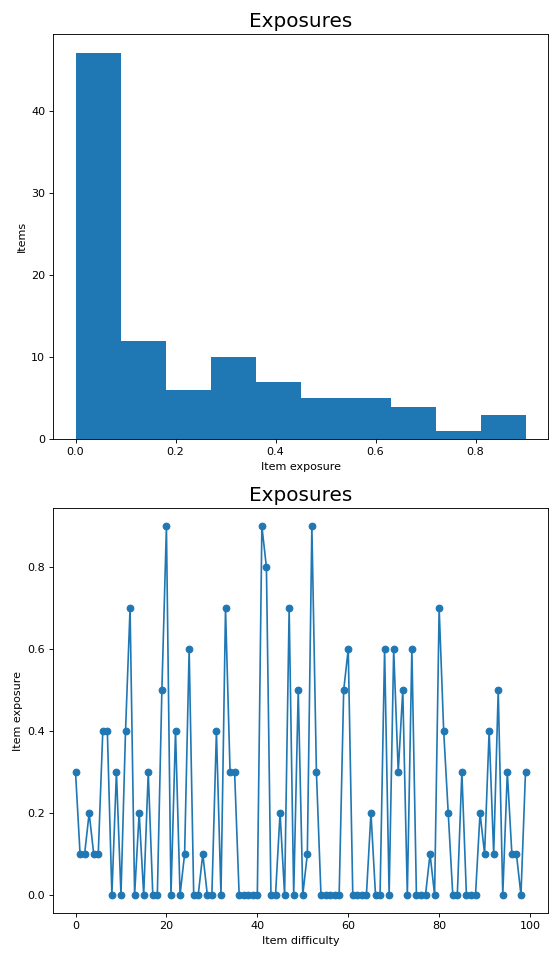
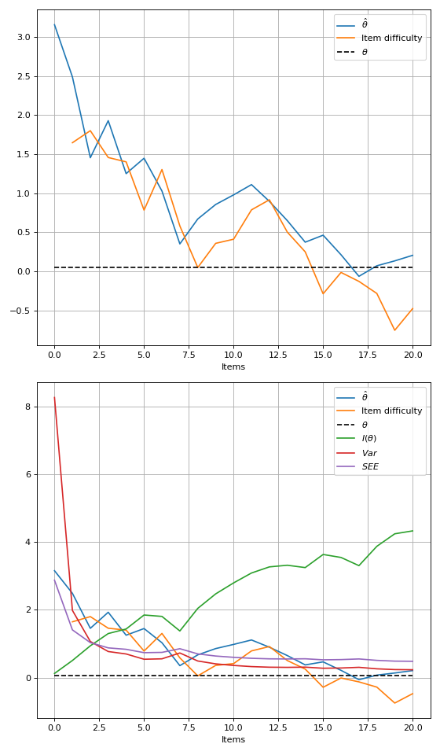

Miscellaneous Plotting Functions – catsim.plot#
Module with functions for plotting IRT-related results.
- class catsim.plot.PlotType(*values)[source]#
Enum with the available item plot types.
- Attributes:
- ICCauto
Item Characteristic Curve - plots probability of correct response vs ability.
- IICauto
Item Information Curve - plots item information vs ability.
- BOTHauto
Both ICC and IIC plotted together.
- catsim.plot.gen3d_dataset_scatter(item_bank: ItemBank | ndarray[tuple[Any, ...], dtype[floating]], title: str | None = None, figsize: tuple | None = None) Axes[source]#
Generate a 3D scatter plot of item parameters.
Creates a three-dimensional visualization of item parameters (a, b, c) to help understand the distribution of item characteristics in the item bank.
(
Source code,png,hires.png,pdf)
- Parameters:
- item_bankItemBank or numpy.ndarray
An ItemBank or item matrix containing item parameters. If a numpy array is provided, it will be converted to an ItemBank.
- titlestr or None, optional
The scatter plot title. Default is None.
- figsizetuple or None, optional
Figure size (width, height) in inches. Default is None.
- Returns:
- matplotlib.axes.Axes
The matplotlib 3D axes object containing the plot.
{kind=link}
{kind=link}
- catsim.plot.item_curve(a: float = 1, b: float = 0, c: float = 0, d: float = 1, ax: Axes | None = None, title: str | None = None, ptype: PlotType = PlotType.ICC, max_info: bool = True, figsize: tuple | None = None) Axes[source]#
Plot Item Response Theory-related item plots.
(
Source code,png,hires.png,pdf)
Fig. 5 Item characteristic and information functions for a given item. Last plot contains both curves together.#
When both curves are plotted in the same figure, the figure has no grid, since each curve has a different scale.
- Parameters:
- afloat, optional
Item discrimination parameter. Default is 1.
- bfloat, optional
Item difficulty parameter. Default is 0.
- cfloat, optional
Item pseudo-guessing parameter. Default is 0.
- dfloat, optional
Item upper asymptote. Default is 1.
- axmatplotlib.axes.Axes or None, optional
Matplotlib axes object to plot on. If None, a new figure is created. Default is None.
- titlestr or None, optional
Plot title. Default is None.
- ptypePlotType, optional
Type of plot: PlotType.ICC for item characteristic curve, PlotType.IIC for item information curve, PlotType.BOTH for both curves. Default is PlotType.ICC.
- max_infobool, optional
Whether the point of maximum information should be shown in the plot. Default is True.
- figsizetuple or None, optional
Figure size (width, height) in inches. Default is None.
- Returns:
- matplotlib.axes.Axes
The matplotlib axes object containing the plot.
{kind=link}
{kind=link}
- catsim.plot.item_exposure(ax: Axes | None = None, title: str | None = None, simulation: SimulationResult | None = None, item_bank: ItemBank | ndarray[tuple[Any, ...], dtype[floating]] | None = None, exposure_rates: ndarray[tuple[Any, ...], dtype[floating]] | None = None, par: str | None = None, hist: bool = False) Axes[source]#
Generate a plot showing item bank exposure rates.
The plot visualizes how frequently each item was administered during a simulation, which is important for assessing item security and test balance.
(
Source code,png,hires.png,pdf)
Fig. 7 Item exposure rates for a given item bank, after a simulation has been performed.#
- Parameters:
- axmatplotlib.axes.Axes or None, optional
Matplotlib axes object to plot on. If None, a new figure is created. Default is None.
- titlestr or None, optional
The plot title. Default is None.
- simulationSimulationResult or None, optional
Simulation result containing exposure data. Default is None.
- item_bankItemBank or numpy.ndarray or None, optional
An ItemBank or item matrix containing item parameters and their exposure rate in the last column. If a numpy array is provided, it will be converted to an ItemBank. Default is None.
- parstr or None, optional
A string representing one of the item parameters (‘a’, ‘b’, ‘c’, ‘d’) to order the items by and use on the x axis, or None to use the default order of the item bank. If hist=True, no sorting will be done. Default is None.
- histbool, optional
If True, plots a histogram of item exposures. Otherwise, plots a line chart of the exposures, sorted in the x-axis by the parameter chosen in par. Default is False.
- Returns:
- matplotlib.axes.Axes
The matplotlib axes object containing the plot.
- Raises:
- ValueError
If neither simulation, item_bank, nor exposure_rates is provided, or if par is not one of ‘a’, ‘b’, ‘c’, ‘d’, or None.
{kind=link}
{kind=link}
- catsim.plot.test_progress(ax: Axes | None = None, title: str | None = None, simulation: SimulationResult | None = None, index: int | None = None, session: CatSessionState | None = None, thetas: list[float] | None = None, administered_items: ndarray[tuple[Any, ...], dtype[floating]] | None = None, true_theta: float | None = None, info: bool = False, var: bool = False, see: bool = False, reliability: bool = False, marker: str | int | None = None, figsize: tuple | None = None) Axes[source]#
Generate a plot representing an examinee’s test progress over time.
The plot shows how the ability estimate, item difficulties, and measurement quality metrics evolve as items are administered during the test.
Note that, while some functions increase or decrease monotonically (like test information and standard error of estimation), the plot calculates these values using the examinee’s ability estimated at that given time of the test. This means that a test that was thought to be informative at a given point may not be as informative after new estimates are made.
(
Source code,png,hires.png,pdf)
- Parameters:
- axmatplotlib.axes.Axes or None, optional
Axis to use. If None, a figure with the necessary axis will be created. Default is None.
- titlestr or None, optional
The plot title. Default is None.
- simulationSimulationResult or None, optional
Simulation result containing session traces. Default is None.
- indexint or None, optional
The index of the session to be plotted when
simulationis provided.- thetaslist[float] or None, optional
If a simulation result is not passed, then a list of ability estimations can be manually passed to the function. Default is None.
- administered_itemsnumpy.ndarray or None, optional
If a simulation result is not passed, then a matrix of administered items, represented by their parameters, can be manually passed to the function. Default is None.
- true_thetafloat or None, optional
The value of the examinee’s true ability. If it is passed, it will be shown on the plot, otherwise not. Default is None.
- infobool, optional
Plot test information. It only works if both abilities and administered items are passed. Default is False.
- varbool, optional
Plot the estimation variance during the test. It only works if both abilities and administered items are passed. Default is False.
- seebool, optional
Plot the standard error of estimation during the test. It only works if both abilities and administered items are passed. Default is False.
- reliabilitybool, optional
Plot the test reliability. It only works if both abilities and administered items are passed. Default is False.
- markerstr or int or None, optional
Matplotlib marker style for the plots. Default is None.
- figsizetuple or None, optional
Size of the figure to be created, in case no axis is passed. Default is None.
- Returns:
- matplotlib.axes.Axes
The matplotlib axes object containing the plot.
- Raises:
- ValueError
If neither simulation nor the required manual parameters are provided, or if thetas and administered_items have mismatched lengths.
{kind=link}
{kind=link}